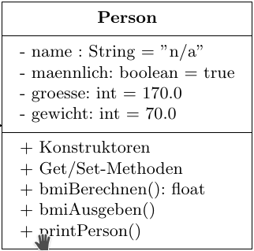

Lektion 1.6 — Teil 1: Grundlagen
Bedingungen & Berechnungen
Lernziele
- Parameter in Set-Methoden mit
if/elseprüfen und ungültige Werte abweisenAbschnitt 1 - Vergleichsoperatoren und die logischen Operatoren
&&und||einsetzenAbschnitt 2 - den Unterschied zwischen Zuweisung
=und Vergleich==erklärenAbschnitt 2 - lokale Variablen für Zwischenergebnisse verwendenAbschnitt 3
- ganzzahlige Division erkennen und mit einer Typkonvertierung (
(float),(double)) vermeidenAbschnitt 3
1 — Parameter-Prüfungen
Wir betrachten die Klasse Person gemäß dem folgenden UML-Diagramm. Die Set-Methoden sollen
sicherstellen, dass die Eigenschaften stets gültige Werte haben.

Person.java Code anzeigen (62 Zeilen)
public class Person {
private String name;
private boolean maennlich;
private int groesse;
private int gewicht;
public Person() {
setName("n/a");
setMaennlich(true);
setGroesse(170);
setGewicht(70);
}
public Person(String name, boolean maennlich, int groesse, int gewicht) {
setName(name);
setMaennlich(maennlich);
setGroesse(groesse);
setGewicht(gewicht);
}
public void setName(String name) {
if (name != null) {
this.name = name;
} else {
System.out.println("Fehler, name darf nicht null sein");
this.name = "n/a";
}
}
public void setMaennlich(boolean maennlich) {
this.maennlich = maennlich;
}
public void setGroesse(int groesse) {
if (groesse >= 110 && groesse <= 220) {
this.groesse = groesse;
} else {
this.groesse = 170;
System.out.println("Groesse ungültig, setze defaultwert");
}
}
public void setGewicht(int gewicht) {
if (gewicht > 30 && gewicht < 150) { // zwischen bedeutet exklusiv
this.gewicht = gewicht;
} else {
this.gewicht = 70;
System.out.println("Gewicht ungültig, setze default");
}
}
public void printPerson() {
if (maennlich == true) {
System.out.println("Name: " + name + " (m), Groesse: "
+ groesse + ", Gewicht: " + gewicht);
} else {
System.out.println("Name: " + name + " (f), Groesse: "
+ groesse + ", Gewicht: " + gewicht);
}
}
}
In setName prüft eine If-Bedingung, ob der Parameter name (ein
Referenzdatentyp) ungleich null ist. Nur dann erfolgt die Zuweisung, anderenfalls wird eine
Fehlermeldung ausgegeben. In setGroesse und setGewicht wird geprüft, ob der
Parameter im gültigen Wertebereich liegt.
2 — Vergleichs- und logische Operatoren
| Operator | Bedeutung | Beispiel |
|---|---|---|
<, <=, >, >= | kleiner, kleiner gleich, größer, größer gleich | groesse >= 110 |
== | gleich (Vergleich!) | maennlich == true |
!= | ungleich | name != null |
&& | logisches Und: nur wenn beide Seiten true sind | groesse >= 110 && groesse <= 220 |
|| | logisches Oder: wenn eine Seite (oder beide) true ist | alter < 6 || alter > 65 |
! | Negation | !maennlich |
Die Vergleichsoperatoren vergleichen die Variable mit dem Zahlenwert (Literal). In
printPerson wird die Ausgabe je nach Geschlecht unterschiedlich formatiert, indem mit
== geprüft wird, ob maennlich den Wert true hat.
Die Gleichheit zweier Werte wird in Java immer mit dem Doppel-Istgleich
== ermittelt. Ein einfaches = ist eine Zuweisung! Bei boolean
kann man den Vergleich übrigens weglassen: if (maennlich) ist gleichbedeutend mit
if (maennlich == true).
„zwischen 30 und 150“ ist mehrdeutig. Im Code ist es eindeutig: > 30 &&
< 150 schließt die Grenzen aus, >= 110 && <= 220 schließt sie ein.
Lies die Angabe genau und dokumentiere deine Entscheidung im Kommentar.
3 — Lokale Variablen, Berechnungen und Typkonvertierung
Wir betrachten nun die folgende Aufgabenstellung:
Der Body-Mass-Index (BMI) berechnet sich anhand der Größe g [m] und des Gewichts w [kg] mittels bmi = w / g².
Berechne diesen Wert in der Methode bmiBerechnen() der Klasse Person und gib den Wert als Rückgabewert zurück. Abhängig vom Geschlecht kann wie folgt klassifiziert werden:
| BMI Frauen | BMI Männer | |
|---|---|---|
| Untergewicht | < 19 | < 20 |
| Normalgewicht | 19 … 24 | 20 … 25 |
| Übergewicht | > 24 | > 25 |
Entwickle nun die Methode bmiAusgeben(), welche den BMI selbst und die Interpretation des BMIs zum Objekt auf die Konsole ausgibt. Diese Methode soll die Methode bmiBerechnen() verwenden und mit if-Bedingungen die entsprechenden Fallunterscheidungen vornehmen.
Dazu ergänzen wir die Klasse Person um die folgenden beiden Methoden:
public float bmiBerechnen() {
float groesseMeter = (float) groesse / 100;
float bmi = (float) gewicht / (groesseMeter * groesseMeter);
return bmi;
}
public void bmiAusgeben() {
String bmiTyp = "";
float bmi = bmiBerechnen();
if (maennlich == true) { // Maenner
if (bmi < 20) {
bmiTyp = "Untergewicht";
} else {
if (bmi >= 20 && bmi <= 25) {
bmiTyp = "Normalgewicht";
} else {
bmiTyp = "Übergewicht";
}
}
} else { // Frauen
if (bmi < 19) {
bmiTyp = "Untergewicht";
} else if (bmi >= 19 && bmi <= 24) {
bmiTyp = "Normalgewicht";
} else {
bmiTyp = "Übergewicht";
}
}
System.out.println("BMI: " + bmi + " Typ: " + bmiTyp);
}
In bmiBerechnen speichert die lokale Variable groesseMeter
die Größe in Metern. Lokale Variablen werden innerhalb einer Methode deklariert und existieren nur
bis zum Ende dieser Methode.
Dafür wird groesse durch 100 dividiert. Achtung: Hier werden zwei int-Werte
dividiert. Java verwendet dann die ganzzahlige Division – alle Nachkommastellen
wären verloren (181 / 100 = 1). Um mit Kommazahlen zu rechnen, muss einer der Operanden in eine
Kommazahl konvertiert werden: das vorangestellte (float) ist eine
Typkonvertierung (Cast, mehr dazu in Lektion 1.4, Abschnitt
„Typkonvertierung“).
int a = 181;
System.out.println(a / 100); // 1
System.out.println((float) a / 100); // 1.81
System.out.println(a / 100.0); // 1.81 – 100.0 ist ein double-Literal
System.out.println((double) (a / 100)); // 1.0 – zu spät konvertiert!
bmiAusgeben legt zunächst die lokale Variable bmiTyp an, die am Ende für
die Ausgabe verwendet wird. Dann folgt eine Fallunterscheidung (männlich/weiblich) und darin weitere
If-Bedingungen für die Intervalle. Die Kurzform else if spart eine Verschachtelungsebene.
Projektschritt
Gültige Werte, Teilzeit und Stunden pro Tag
Alle Set-Methoden prüfen jetzt ihre Parameter (dieselben Grenzen gelten später auch in Lektion 2.8): Geburtsjahr 1900–2050, Stundenlohn 8–999 Euro, 1–50 Wochenstunden. Bei ungültigen Werten gibt es eine Fehlermeldung und einen Standardwert. Neu sind außerdem isTeilzeit(), stundenProTag() mit Typkonvertierung und eine Fallunterscheidung in print().
public void setGeburtsjahr(int geburtsjahr) {
if (geburtsjahr >= 1900 && geburtsjahr <= 2050) {
this.geburtsjahr = geburtsjahr;
} else {
System.out.println("Fehler: ungueltiges Geburtsjahr: " + geburtsjahr);
this.geburtsjahr = 1970;
}
}
public void setStundenlohn(int stundenlohn) {
if (stundenlohn > 7 && stundenlohn < 1000) {
this.stundenlohn = stundenlohn;
} else {
System.out.println("Fehler: ungueltiger Stundenlohn: " + stundenlohn);
this.stundenlohn = 10;
}
}
public boolean isTeilzeit() {
return anzahlWochenStunden < 38;
}
public double stundenProTag() {
// Typkonvertierung: sonst ganzzahlige Division (37 / 5 = 7)
double stunden = (double) anzahlWochenStunden / 5;
return stunden;
}
public void print() {
String beschaeftigung;
if (isTeilzeit()) {
beschaeftigung = "Teilzeit";
} else {
beschaeftigung = "Vollzeit";
}
System.out.println("Mitarbeiter: " + name + " (Geburtsjahr: " + geburtsjahr
+ "), " + stundenlohn + " Euro/h, "
+ anzahlWochenStunden + " h/Woche (" + beschaeftigung + ")");
}Damit du nicht jede Prüfung in der Object Workbench durchklicken musst, schreibst du die Aufrufe in ein kleines Programm mit main() (Lektion 1.5): Lege in src/test/java die Datei TestMitarbeiter.java an. Sie erzeugt drei Mitarbeiter – darunter einen mit lauter ungültigen Werten, der vier Fehlermeldungen und die Standardwerte liefern muss – und gibt die Ergebnisse aus. Hinter jeder Ausgabe steht im Kommentar, was herauskommen soll; starte das Programm mit dem grünen Pfeil neben main und vergleiche.
/*
* Ausprobieren mit main: erzeugt Mitarbeiter, ruft Methoden auf und
* gibt die Ergebnisse aus. Die erwarteten Werte stehen im Kommentar -
* ob sie stimmen, wird "mit dem Auge" kontrolliert.
* Starten: grüner Pfeil neben main.
*/
void main() {
System.out.println("--- Karl, Konstruktor mit 4 Parametern:");
Mitarbeiter m1 = new Mitarbeiter("Karl Maier", 1989, 15, 40);
m1.print(); // ... 15 Euro/h, 40 h/Woche (Vollzeit)
System.out.println("Kosten pro Monat: " + m1.getKostenProMonat()); // 2400
System.out.println("Kosten fuer 5 Wochen: " + m1.getKostenProMonat(5)); // 3000
System.out.println("Alter im Jahr 2026: " + m1.alterBerechnen(2026)); // 37
System.out.println("--- Susanne, Standardwerte und Set-Methoden:");
Mitarbeiter m2 = new Mitarbeiter("Susanne Huber", 1991);
m2.print(); // ... 10 Euro/h, 40 h/Woche (Standardwerte)
m2.setStundenlohn(20);
m2.setAnzahlWochenStunden(30);
m2.print(); // ... 20 Euro/h, 30 h/Woche
System.out.println("Kosten pro Monat: " + m2.getKostenProMonat()); // 2400
System.out.println("Teilzeit? " + m2.isTeilzeit()); // true
System.out.println("Stunden pro Tag: " + m2.stundenProTag()); // 6.0
System.out.println("--- Ungueltige Werte:");
Mitarbeiter m3 = new Mitarbeiter(null, 1789, 5, 70); // 4 Fehlermeldungen
m3.print(); // Mitarbeiter: n/a (Geburtsjahr: 1970), 10 Euro/h, 40 h/Woche (Vollzeit)
}📁 Stand nach dieser Lektion: beispiele/1.6/ (vollständige Klasse mit allen Prüfungen)
Häufige Fehler
3 Fehler · zum Aufklappen klicken
if (anzahl = 0) → incompatible types: int cannot be converted to boolean. Bei boolean-Variablen übersetzt if (maennlich = true) sogar und ist dann immer wahr.
Vergleiche mit ==; bei boolean einfach if (maennlich) bzw. if (!maennlich) schreiben.
Der BMI ist immer eine ganze Zahl oder sogar 0, z. B. weil groesse / 100 mit 181 cm 1 ergibt.
Vor der Division einen Operanden konvertieren: (double) groesse / 100 oder groesse / 100.0.
if (groesse < 110 && groesse > 220) ist nie wahr – ungültige Werte werden durchgelassen.
„außerhalb“ heißt ||: groesse < 110 || groesse > 220. Am besten die gültige Bedingung formulieren (>= 110 && <= 220) und ungültige Werte im else behandeln.
Aufgaben
4 Aufgaben · zum Aufklappen klicken
Eine Klasse Person mit Größe und Gewicht, geprüften Set-Methoden und der Berechnung des Body-Mass-Index samt Interpretation (Unter-, Normal-, Übergewicht) getrennt nach Geschlecht.
Ein Computer mit Modell, SSD und Hauptspeicher: Upgrade auf SSD nur, wenn noch keine eingebaut ist; Speicher-Upgrade mit Obergrenze 64 GB, das zurückgibt, wie viel tatsächlich ergänzt wurde.
Ein Fahrschein-Automat verwaltet eingeworfenes Guthaben und Gesamteinnahmen: Geld einwerfen, Ticket drucken (nur bei genug Guthaben) und Wechselgeld auszahlen.
Ein Beamer mit Raum, Restzeit und Ein/Aus-Zustand: Einschalten verbraucht Restzeit, bei Restzeit 0 ist er kaputt, Reparieren und Herunterwerfen verändern die Restzeit.
Quiz
4 Fragen · zum Aufklappen klicken
Frage 1 Was ist der Unterschied zwischen = und ==?
alter = 18 speichert 18 in der Variable, alter == 18 liefert true oder false. In einer if-Bedingung braucht man den Vergleich.Frage 2 Ein Wert x soll zwischen 10 und 100 liegen (jeweils inklusive). Welche Bedingung prüft das?
&&. Mit || wäre jede Zahl gültig. Die Schreibweise 10 <= x <= 100 gibt es in Java nicht, und >/< würden die Grenzen ausschließen.Frage 3 Welchen Wert hat double d = 7 / 2;?
7 / 2 ist eine Division zweier int-Werte und ergibt die ganze Zahl 3. Erst danach wird sie in double umgewandelt. Richtig wäre z. B. (double) 7 / 2 oder 7.0 / 2.Frage 4 Was gilt für eine lokale Variable, die innerhalb einer Methode deklariert wird?
private gibt es für lokale Variablen nicht.